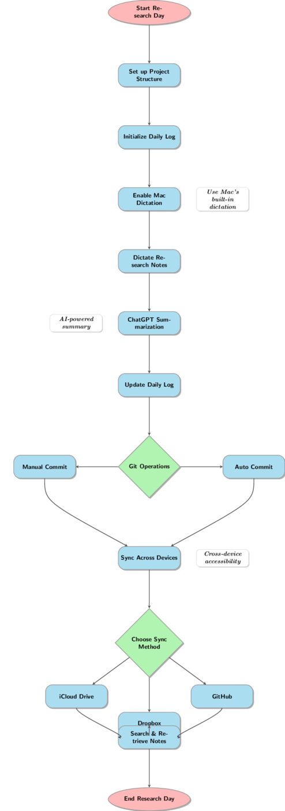

Streamlining Your Research Workflow on Mac with ChatGPT
![]()
1 Introduction
Tracking daily research progress can quickly become overwhelming without a structured workflow. This guide outlines an efficient system using a well-organized directory structure, automated logging, ChatGPT for dictation and summarization, and Git for version control. By implementing this workflow, you can maintain clear, searchable research logs while reducing manual overhead.

2 Step 1: Organize Your Research Folder Structure
A structured directory keeps your research files easily accessible and prevents clutter. Use the following command to create a research workspace:
mkdir -p ~/prj/research_update ~/prj/{X1,X2,X3,X4,X5,X6,X7,X8,X9,X10}Each project folder should contain: - notes.md – Running log of project progress - references.bib – Citation management - data/ – Datasets and related files - coding/ – Code and analyses - figures/ – Graphs and visualizations - tables/ – Data summaries - archive/ – Storage for non-current files

3 Step 2: Implement a Daily Logging System
Maintaining a centralized daily log helps consolidate research updates. Store daily progress in:
```sh
~/prj/daily_log.mdTo streamline the process, we use a script to automatically generate a structured prompt for ChatGPT.
4 Step 3: Automate Dictation & Summarization via ChatGPT
Mac’s built-in dictation tool allows hands-free logging, while ChatGPT refines your notes into concise summaries.
4.1 Step 3.1: Preparing a Dictation Prompt
Use this Bash script to copy a structured prompt to your clipboard:
#!/bin/bash
current_time=$(date +"%Y-%m-%d %H:%M:%S")
current_dir=$(basename "$PWD")
prompt="I'm about to dictate research experiment notes.\nWhen I'm done, provide a concise summary that includes:\n1. The date and time of dictation ($current_time).\n2. The name of the current research project directory ($current_dir).\n3. Each line of the summary should begin with \"$current_dir:\" so that it can be extracted using grep.\nThe notes start here: "
echo -n "$prompt" | pbcopy
echo "Research prompt copied to clipboard. Paste it into ChatGPT when ready."
4.2 Step 3.2: Dictating Notes
- Enable Mac’s dictation by pressing
Controltwice. - Dictate your research notes.
- Copy and paste the generated summary into your daily log.
4.3 Step 3.3: Automate Log Updates
To append the summarized notes to your daily log, use the following script:
#!/bin/bash
clipboard_content=$(pbpaste)
echo "$clipboard_content" >> ~/prj/research_update/daily_log.md
echo "Update appended to daily_log.md."5 Step 4: Version Control with Git
Keeping track of your research logs is crucial. Automate version control with Git:
cd ~/prj/research_update
git init
git add daily_log.md
git commit -m "Daily log update $(date +'%Y-%m-%d')"
git push origin main
5.1 Automate Daily Git Commits
Schedule an automatic commit every night using crontab:
0 23 * * * cd ~/prj/research_update && git add . && git commit -m "Daily log $(date)" && git push6 Step 5: Search & Retrieve Past Notes
Use ripgrep to find past research logs:
#!/bin/bash
current_dir=$(basename "$PWD")
rg $current_dir ~/prj/research_update/daily_log.md | cut -c6-
7 Step 6: Sync Research Logs Across Devices
Ensure seamless access to your research logs by syncing them across devices:
rsync -av ~/prj/research_update ~/iCloudDrive/ResearchBackup/Alternatively, use Dropbox or GitHub for remote access.
8 Summary of the Workflow
- Organize project folders.
- Set up a centralized daily log.
- Use ChatGPT for dictation and summarization.
- Automate log updates with a script.
- Track changes with Git and schedule daily commits.
- Easily search and retrieve past notes.
- Sync logs across devices for accessibility.
By integrating this workflow, you’ll reduce friction in tracking your research, making daily documentation effortless and structured. Would this system work for you? Let me know how it can be improved!
Reuse
Citation
@online{(ryy) glenn thomas2025,
author = {(Ryy) Glenn Thomas, Ronald},
title = {Streamlining {Your} {Research} {Workflow} on {Mac} with
{ChatGPT}},
date = {2025-02-11},
url = {https://focusonr.org/posts/research_management/research_workflow_local.html},
langid = {en}
}